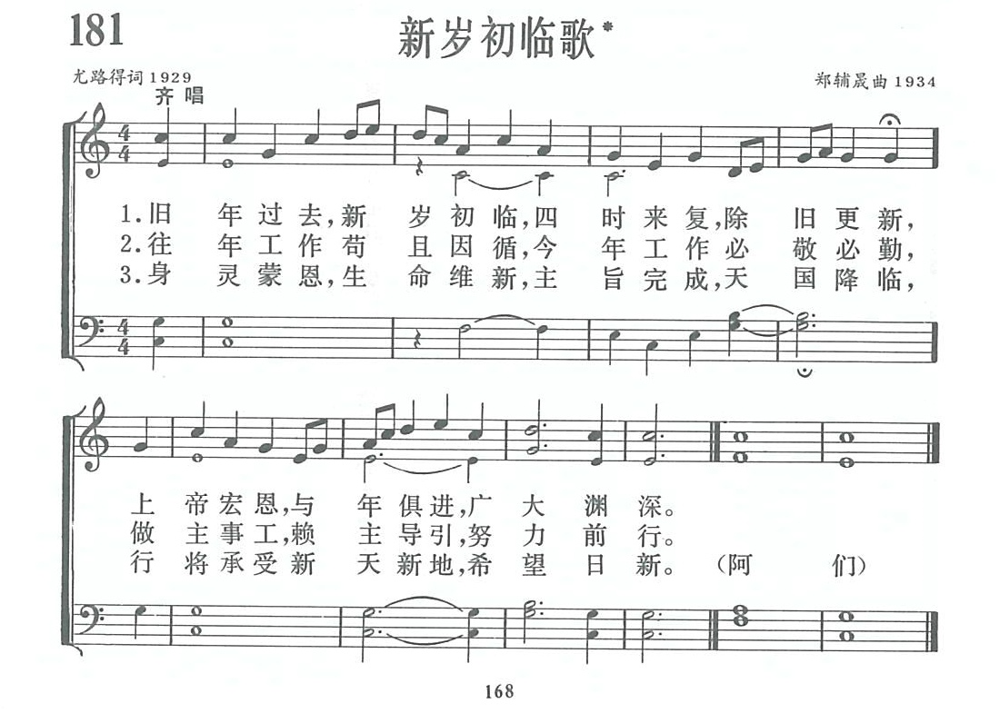
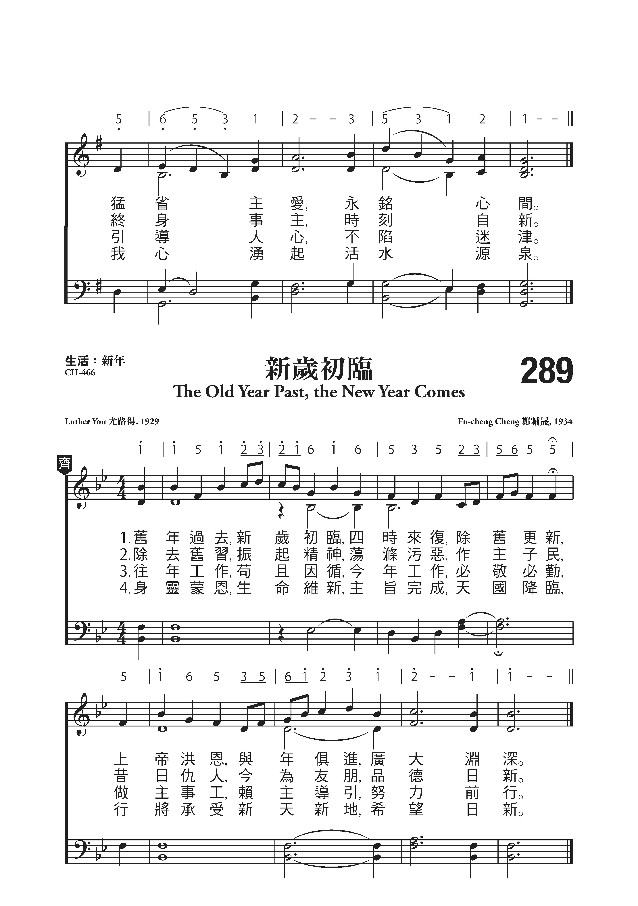

|
|
讚美詩(新編) 第181首《新歲初臨歌》 |
|
|
|
|
https://www.zanmeishige.com/tab/13854.html?songbook=1&index=181


|
|
|
|
|

https://youtu.be/oUefy4HNgrU
第181首 新岁初临歌* _尤路得-尤树勋 The old year past, the new year comes
经文：“从岁首到年终，耶和华你上帝的眼目时常看顾那地“(申ll：12)。
这是一首除旧迎新的诗歌，原见于《普天颂赞》(旧版)第401首。
歌词作者具名为尤路得，经核实，尤路得为尤树勋牧师的笔名。尤树勋字建人，是浙江温州人，生于1892年，少时跟篾匠学艺，信教后虔诚学道，二十年代初毕业于南京金陵神学院，后担任温州循道公会城西堂主任牧师。1925年他到上海参加基督教协进会会议，目睹五卅惨案，激于义愤，返温后向英传教士提出，要求支援爱国行动，反对英捕暴行，遭到拒绝，便毅然离开循道公会，筹建中华基督教自立会。在他的积极推动下，玉环、乐清、永嘉、青田等县的爱国信徒都纷起响应，先后建立分会。
1927年后他在上海天安堂任牧师十余载。抗战胜利后，他在中华基督教勉励会任总干事，直至1958年。勉励会出版有《经课讲义》，一年52课，专供义工学习讲道之用。尤树勋于1970年蒙召归天。
曲作者郑辅晟同道是福建古田县人，生于1903年。他1O岁时在圣公会受洗，1919年就读于福州三一中学，后毕业于师范学校，曾在教会创办的学校内任教职员和校长十余年。以后他应福州商务印书馆和中华书局的嘱托，办古田县建国书局，解放后并入古田县百货公司。他于1959年退休。
郑辅晟爱好音乐，在学校时就参加唱诗班，当教员时也多担任音乐课程，并在圣堂内弹风琴。《新编》出版前，编辑部与他通信联系，他对于编辑一本通用的新赞美诗集非常兴奋，写道：“因圣经教训我们互相合一，彼此相爱，中国教会也要选用各教派的圣歌。”他还曾认真地提供《普天颂赞》中哪些是常用的，应该编入新赞美诗集的诗歌目录。
编辑部同工为《新岁初临歌》的曲作者仍然健在，并大力支持此项圣工而献上赞美。
这首诗的调名为《岁又来》。